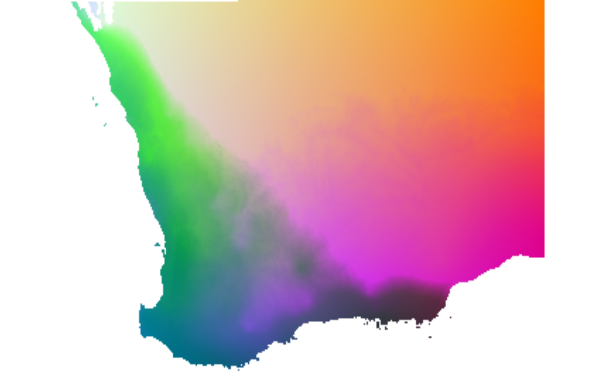

Transform Environmental Data Using a Fitted Generalized Dissimilarity Model
Source:R/gdm.transform.R
gdm.transform.RdThis function transforms geographic and environmental predictors using (1) the
fitted functions from a model object returned from gdm and (2) a
data frame or raster object containing predictor data for a set of sites.
Arguments
- model
A gdm model object resulting from a call to
gdm.- data
Either (i) a data frame containing values for each predictor variable in the model, formatted as follows: X, Y, var1, var2, var3, ..., varN or (ii) a terra object SpatRaster with one layer per predictor variable used in the model, excluding X and Y (rasters for x- and y-coordinates are built automatically from the input rasters if the model was fit with geo=TRUE). The order of the columns (data frame) or raster layers (SpatRaster) MUST be the same as the order of the predictors in the site-pair table used in model fitting. There is currently no checking to ensure that the order of the variables to be transformed are the same as those in the site-pair table used in model fitting. If geographic distance was not used as a predictor in model fitting, the x- and y-columns need to be removed from the data to be transformed. Output is provided in the same format as the input data.
- filename
character. Output filename for rasters. When provided the raster layers are written to file directly.
- ...
additional arguments to pass to terra
predictfunction.
Value
gdm.transform returns either a data frame with the same number of rows as the input data frame or a SpatRaster, depending on the format of the input data. If the model uses geographic distance as a predictor the output object will contain columns or layers for the transformed X and Y values for each site. The transformed environmental data will be in the remaining columns or layers.
References
Ferrier S, Manion G, Elith J, Richardson, K (2007) Using generalized dissimilarity modelling to analyse and predict patterns of beta diversity in regional biodiversity assessment. Diversity & Distributions 13, 252-264.
Fitzpatrick MC, Keller SR (2015) Ecological genomics meets community-level modeling of biodiversity: Mapping the genomic landscape of current and future environmental adaptation. Ecology Letters 18: 1-16
Examples
# start with the southwest data set
# grab the columns with xy, site ID, and species data
sppTab <- southwest[, c("species", "site", "Lat", "Long")]
##fit gdm using rasters
rastFile <- system.file("./extdata/swBioclims.grd", package="gdm")
envRast <- terra::rast(rastFile)
sitePairRast <- formatsitepair(sppTab, 2, XColumn="Long", YColumn="Lat",
sppColumn="species", siteColumn="site",
predData=envRast)
#> Warning: No abundance column was specified, so the biological data are assumed to be presences.
#> Aggregation function missing: defaulting to length
#> Warning: When using rasters for environmental covariates (predictors), each site is assigned to the
#> raster cell in which the site is located. If more than one site occurs within the same raster cell,
#> the biological data of those sites are aggregated (more likely as raster resolution decreases).
##remove NA values
sitePairRast <- na.omit(sitePairRast)
##fit raster GDM
gdmRastMod <- gdm(sitePairRast, geo=TRUE)
##raster input, raster output
transRasts <- gdm.transform(gdmRastMod, envRast)
# map biological patterns; increase maxcell if using large rasters
pcaSamp <- terra::prcomp(transRasts, maxcell = 1e4)
# note the use of the 'index' argument
pcaRast <- terra::predict(transRasts, pcaSamp, index=1:3)
# stretch the PCA rasters to make full use of the colour spectrum
pcaRast <- terra::stretch(pcaRast)
terra::plotRGB(pcaRast, r=1, g=2, b=3)
